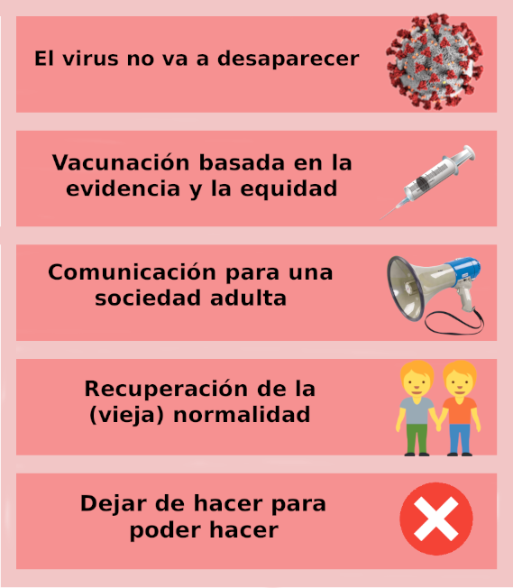

El cambio de año viene marcado por el sexto período epidémico de COVID-19 en España. Esta ola ha sido distinta a todas las demás: la llegada de ómicron está dejando una gran cantidad de infecciones con niveles máximos de incidencia, pero con pocos casos graves en términos relativos. Según datos del Instituto de Salud Carlos III, actualmente la mitad de las infecciones detectadas son asintomáticas y los indicadores de hospitalización y muerte están en mínimos históricos1. Esto se debe en parte a la menor patogenicidad intrínseca de ómicron respecto a variantes previas, y también a su mayor facilidad para infectar a personas con inmunidad previa (por infección o por vacuna) y que, por tanto, presentan un riesgo bajo de enfermedad grave.
La baja frecuencia de enfermedad grave, junto a la saturación tanto de la Atención Primaria como de Salud Pública por casos leves, nos debe llevar a replantearnos cómo afrontar la pandemia a partir de este momento. Desde el Comité de Redacción de AMF queremos contribuir a este debate a partir de cinco ideas clave.
